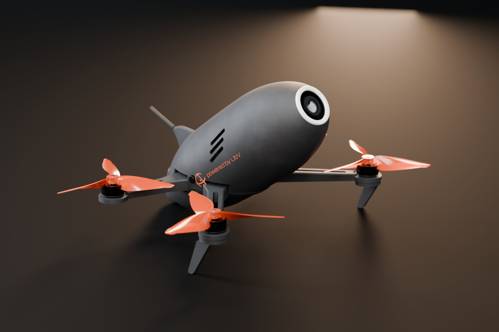
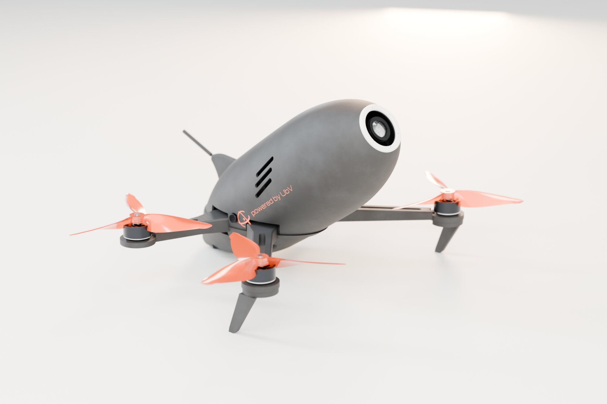
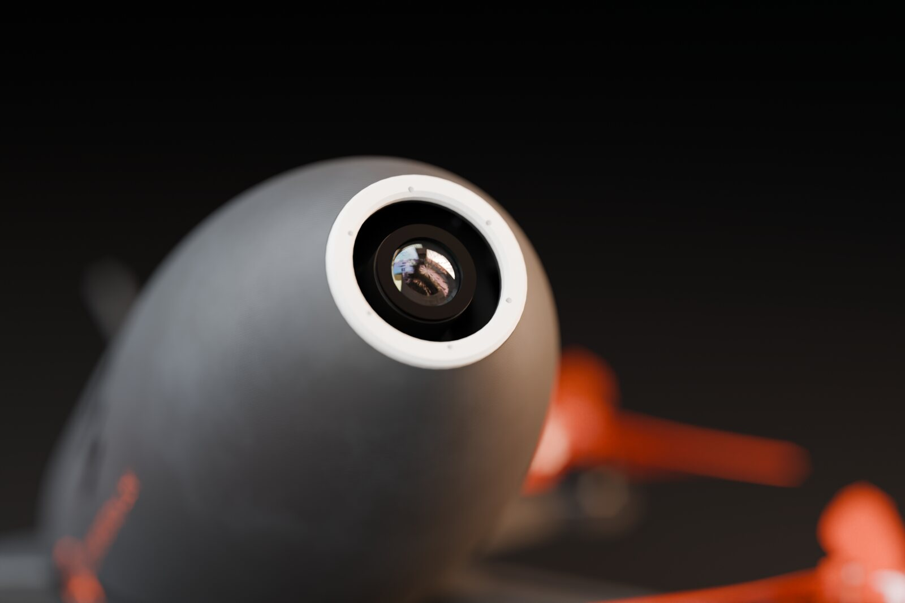
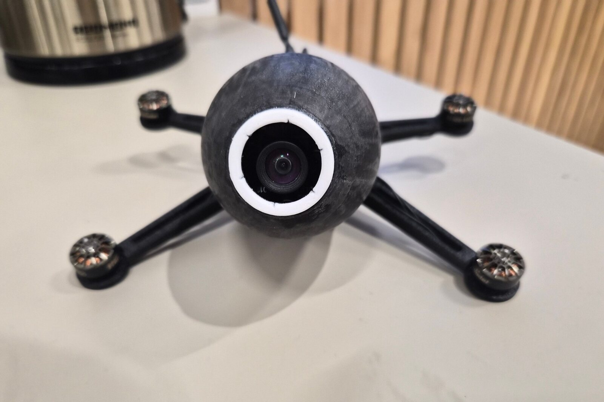
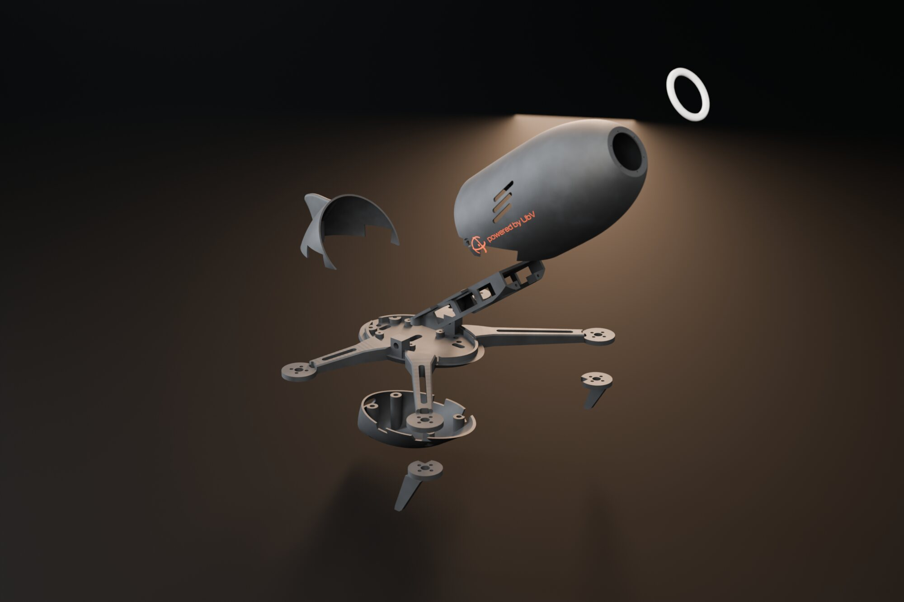
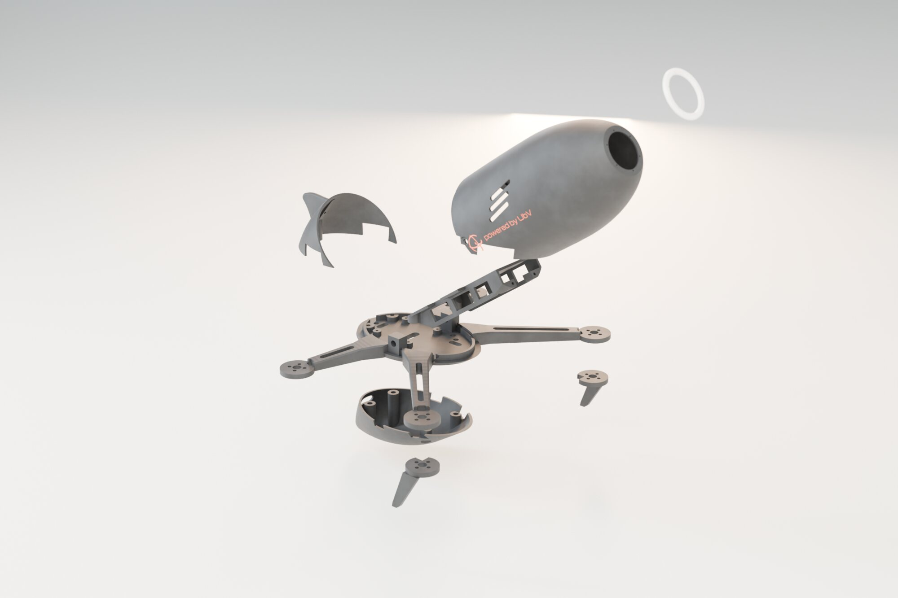
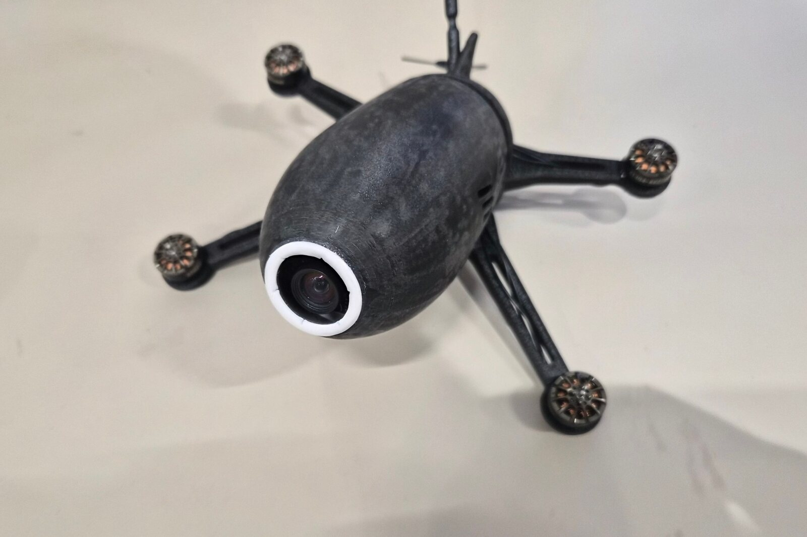
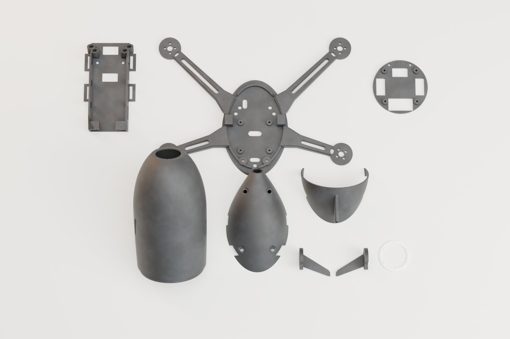

Drop3 v2 — автономная гоночная «капля» 3,5″
Автономный дрон для автономных гонок: трассу он проходит сам, по своей камере, без пилота. Корпус-капля наклонён на 35° к плоскости винтов: на гоночном тангаже он идёт точно вдоль потока, а камера в носу смотрит по курсу.
Прототип собран и летал. Открываем раму: девять деталей из PETG-CF, STL уже повёрнуты на стол. Бортовой код и исходники CAD в пакет не входят.

Как это устроено
В автономной гонке пилота нет: дрон сам видит трассу через камеру в носу и сам ведёт себя по ней. Обычный гоночный дрон летит, наклонившись вперёд, и подставляет потоку корпус боком. У Drop3 корпус заранее повёрнут на угол полёта: на тангаже 35° капля Ø62 × 165 мм встаёт по потоку, а камера смотрит по курсу — ей не нужно компенсировать наклон.
Силовая схема простая: плоская рама — дека и четыре балочных луча — несёт все нагрузки. На деке стоит хребет с полкой АКБ и местом под компаньон-компьютер, спереди — переборка камеры. Колпак нагрузок не несёт и снимается сдвигом вперёд по оси капли: АКБ меняется примерно за 30 секунд.
Соединения «печать — печать» — винты M3 во вплавляемые латунные вставки, 9 штук. Модель параметрическая: генератор проверяет коллизии, доступ отвёрткой к каждому винту, трассы проводов, зазоры винтов и свесы при печати.








Что в пакете
Архив: папка STL, инструкция ПРОЧТИ_МЕНЯ.txt (печать, крепёж, посадочные места, порядок сборки), лицензия, превью и контрольные суммы.
| Файл | Деталь | Печать |
|---|---|---|
Drop3_Frame.stl | Рама: дека + 4 луча | дном на стол, без поддержек; 6 стенок, 40 % |
Drop3_Canopy.stl | Колпак-капля | кромкой на стол; «дерево» под носом |
Drop3_Fairing.stl | Обтекатель полётника | кромкой на стол, без поддержек |
Drop3_TailCap.stl | Хвостовая крышка с килем | кромкой на стол; немного «дерева» под килем |
Drop3_Spine.stl | Хребет: полка АКБ | полкой на стол; 4 стенки |
Drop3_CamMount.stl | Переборка камеры | задней гранью на стол |
Drop3_Leg_L.stl · Leg_R | Передние ножки | на боку; заливка 100 % |
Drop3_Bezel.stl | Ободок «глаза» | фаской вверх; контрастный PETG |
Печать
- PETG-CF и закалённое сопло 0,4: штатное латунное сопло углепластик быстро съест.
- Сопло 260 °C, стол 70 °C, слой 0,2 мм, 3 стенки, gyroid 15 %. Пруток сушить 65 °C × 6 ч.
- Проверено на Bambu Lab A1 (стол 256 × 256); всё вместе — ориентир 7–9 часов печати.
Что ставится в раму
- Моторы 1404 (M2 на Ø9), винты 3,5×2,5×3, props out.
- Полётник AIO 33 × 33 с креплением 25,5 × 25,5 — под декой, в обтекателе.
- АКБ 4S 850 до 31 × 62 × 30 мм, камера на плате 32 × 32 (отверстия на 28,4 мм) с объективом M12, компаньон-компьютер формата Zero.
- Крепёж: 9 вставок M3 × 4, винты M3 ×8/×14/×25 и M2 ×5…×10 — полный список в ПРОЧТИ_МЕНЯ.txt.
Ограничения
- Борт летал, но масса, центровка, тяга и прочность лучей на странице — расчёт по CAD; замеры — впереди.
- Посадочные размеры покупных деталей взяты из их моделей — сверьте со своими до печати.
- Печатная рама — любительская конструкция: после жёстких посадок проверяйте лучи на трещины. Летайте там, где это разрешено, без людей в зоне полёта.
Авторы
- Константин — соавтор: концепция «капли», первая модель Drop3, участие в разработке v2.
- UbVProject — переработка, расчёт, CAD v2.
- Испытательная площадка — МКБ ИТМО.
Лицензия CC BY-NC-SA 4.0: печатать, менять и делиться можно с указанием «Drop3 v2 · UbVProject, Константин»; продажа деталей — по согласованию.